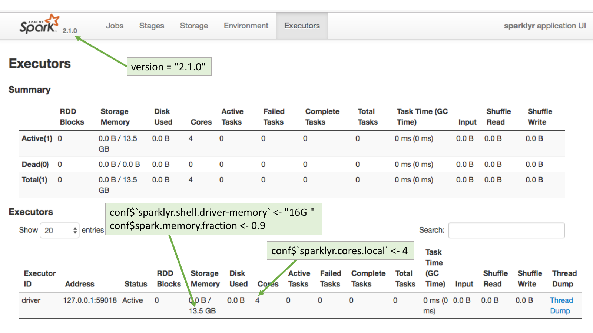
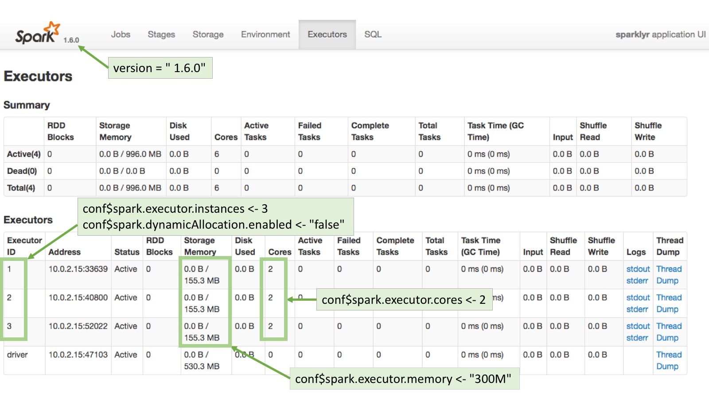
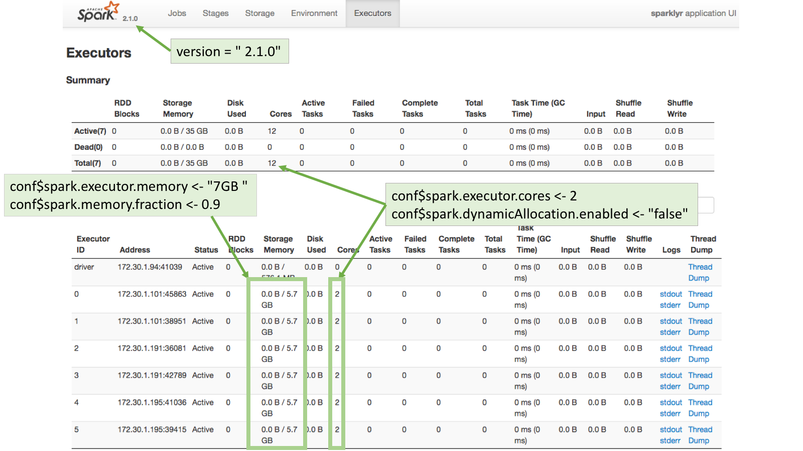

Configuring Spark Connections
Local mode
Local mode is an excellent way to learn and experiment with Spark. Local mode also provides a convenient development environment for analyses, reports, and applications that you plan to eventually deploy to a multi-node Spark cluster.
To work in local mode, you should first install a version of Spark for local use. You can do this using the spark_install() function, for example:
Recommended properties
The following are the recommended Spark properties to set when connecting via R:
sparklyr.cores.local - It defaults to using all of the available cores. Not a necessary property to set, unless there’s a reason to use less cores than available for a given Spark session.
sparklyr.shell.driver-memory - The limit is the amount of RAM available in the computer minus what would be needed for OS operations.
spark.memory.fraction - The default is set to 60% of the requested memory per executor. For more information, please see this Memory Management Overview page in the official Spark website.
Connection example
conf$`sparklyr.cores.local` <- 4
conf$`sparklyr.shell.driver-memory` <- "16G"
conf$spark.memory.fraction <- 0.9
sc <- spark_connect(master = "local",
version = "2.1.0",
config = conf)Executors page
To see how the requested configuration affected the Spark connection, go to the Executors page in the Spark Web UI available in http://localhost:4040/storage/

Customizing connections
A connection to Spark can be customized by setting the values of certain Spark properties. In sparklyr, Spark properties can be set by using the config argument in the spark_connect() function.
By default, spark_connect() uses spark_config() as the default configuration. But that can be customized as shown in the example code below. Because of the unending number of possible combinations, spark_config() contains only a basic configuration, so it will be very likely that additional settings will be needed to properly connect to the cluster.
conf <- spark_config() # Load variable with spark_config()
conf$spark.executor.memory <- "16G" # Use `$` to add or set values
sc <- spark_connect(master = "yarn-client",
config = conf) # Pass the conf variable Spark definitions
It may be useful to provide some simple definitions for the Spark nomenclature:
Node: A server
Worker Node: A server that is part of the cluster and are available to run Spark jobs
Master Node: The server that coordinates the Worker nodes.
Executor: A sort of virtual machine inside a node. One Node can have multiple Executors.
Driver Node: The Node that initiates the Spark session. Typically, this will be the server where
sparklyris located.Driver (Executor): The Driver Node will also show up in the Executor list.
Useful concepts
Spark configuration properties passed by R are just requests - In most cases, the cluster has the final say regarding the resources apportioned to a given Spark session.
The cluster overrides ‘silently’ - Many times, no errors are returned when more resources than allowed are requested, or if an attempt is made to change a setting fixed by the cluster.
YARN
Background
Using Spark and R inside a Hadoop based Data Lake is becoming a common practice at companies. Currently, there is no good way to manage user connections to the Spark service centrally. There are some caps and settings that can be applied, but in most cases there are configurations that the R user will need to customize.
The Running on YARN page in Spark’s official website is the best place to start for configuration settings reference, please bookmark it. Cluster administrators and users can benefit from this document. If Spark is new to the company, the YARN tunning article, courtesy of Cloudera, does a great job at explaining how the Spark/YARN architecture works.
Recommended properties
The following are the recommended Spark properties to set when connecting via R:
spark.executor.memory - The maximum possible is managed by the YARN cluster. See the Executor Memory Error
spark.executor.cores - Number of cores assigned per Executor.
spark.executor.instances - Number of executors to start. This property is acknowledged by the cluster if spark.dynamicAllocation.enabled is set to “false”.
spark.dynamicAllocation.enabled - Overrides the mechanism that Spark provides to dynamically adjust resources. Disabling it provides more control over the number of the Executors that can be started, which in turn impact the amount of storage available for the session. For more information, please see the Dynamic Resource Allocation page in the official Spark website.
Client mode
Using yarn-client as the value for the master argument in spark_connect() will make the server in which R is running to be the Spark’s session driver. Here is a sample connection:
conf <- spark_config()
conf$spark.executor.memory <- "300M"
conf$spark.executor.cores <- 2
conf$spark.executor.instances <- 3
conf$spark.dynamicAllocation.enabled <- "false"
sc <- spark_connect(master = "yarn-client",
spark_home = "/usr/lib/spark/",
version = "1.6.0",
config = conf)Executors page
To see how the requested configuration affected the Spark connection, go to the Executors page in the Spark Web UI. Typically, the Spark Web UI can be found using the exact same URL used for RStudio but on port 4040.
Notice that 155.3MB per executor are assigned instead of the 300MB requested. This is because the spark.memory.fraction has been fixed by the cluster, plus, there is fixed amount of memory designated for overhead.

Cluster mode
Running in cluster mode means that YARN will choose where the driver of the Spark session will run. This means that the server where R is running may not necessarily be the driver for that session. Here is a good write-up explaining how running Spark applications work: Running Spark on YARN
The server will need to have copies of at least two files: yarn-site.xml and hive-site.xml. There may be other files needed based on your cluster’s individual setup.
This is an example of connecting to a Cloudera cluster:
library(sparklyr)
Sys.setenv(JAVA_HOME="/usr/lib/jvm/java-7-oracle-cloudera/")
Sys.setenv(SPARK_HOME = '/opt/cloudera/parcels/CDH/lib/spark')
Sys.setenv(YARN_CONF_DIR = '/opt/cloudera/parcels/CDH/lib/spark/conf/yarn-conf')
conf$spark.executor.memory <- "300M"
conf$spark.executor.cores <- 2
conf$spark.executor.instances <- 3
conf$spark.dynamicAllocation.enabled <- "false"
conf <- spark_config()
sc <- spark_connect(master = "yarn-cluster",
config = conf)Executor memory error
Requesting more memory or CPUs for Executors than allowed will return an error. This is one of the exceptions to the cluster’s ‘silent’ overrides. It will return a message similar to this:
Failed during initialize_connection: java.lang.IllegalArgumentException: Required executor memory (16384+1638 MB) is above the max threshold (8192 MB) of this cluster! Please check the values of 'yarn.scheduler.maximum-allocation-mb' and/or 'yarn.nodemanager.resource.memory-mb'A cluster’s administrator is the only person who can make changes to the settings mentioned in the error. If the cluster is supported by a vendor, like Cloudera or Hortonworks, then the change can be made using the cluster’s web UI. Otherwise, changes to those settings are done directly in the yarn-default.xml file.
Kerberos
There are two options to access a “kerberized” data lake:
- Use kinit to get and cache the ticket. After kinit is installed and configured. After kinit is setup, it can used in R via a
system()call prior to connecting to the cluster:
system("echo '<password>' | kinit <username>")For more information visit this site: Apache - Authenticate with kinit
- A preferred option may be to use the out-of-the-box integration with Kerberos that the commercial version of RStudio Server offers.
Standalone mode
Recommended properties
The following are the recommended Spark properties to set when connecting via R:
The default behavior in Standalone mode is to create one executor per worker. So in a 3 worker node cluster, there will be 3 executors setup. The basic properties that can be set are:
spark.executor.memory - The requested memory cannot exceed the actual RAM available.
spark.memory.fraction - The default is set to 60% of the requested memory per executor. For more information, please see this Memory Management Overview page in the official Spark website.
spark.executor.cores - The requested cores cannot be higher than the cores available in each worker.
Dynamic Allocation
If dynamic allocation is disabled, then Spark will attempt to assign all of the available cores evenly across the cluster. The property used is spark.dynamicAllocation.enabled.
For example, the Standalone cluster used for this article has 3 worker nodes. Each node has 14.7GB in RAM and 4 cores. This means that there are a total of 12 cores (3 workers with 4 cores) and 44.1GB in RAM (3 workers with 14.7GB in RAM each).
If the spark.executor.cores property is set to 2, and dynamic allocation is disabled, then Spark will spawn 6 executors. The spark.executor.memory property should be set to a level that when the value is multiplied by 6 (number of executors) it will not be over total available RAM. In this case, the value can be safely set to 7GB so that the total memory requested will be 42GB, which is under the available 44.1GB.
Connection example
conf <- spark_config()
conf$spark.executor.memory <- "7GB"
conf$spark.memory.fraction <- 0.9
conf$spark.executor.cores <- 2
conf$spark.dynamicAllocation.enabled <- "false"
sc <- spark_connect(master="spark://master-url:7077",
version = "2.1.0",
config = conf,
spark_home = "/home/ubuntu/spark-2.1.0-bin-hadoop2.7/")Executors page
To see how the requested configuration affected the Spark connection, go to the Executors page in the Spark Web UI. Typically, the Spark Web UI can be found using the exact same URL used for RStudio but on port 4040:
